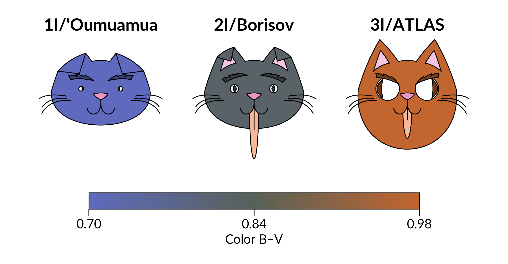

Cachai made an appearance in the “Python meetings” at the PUC Institute of Astrophysics!
Today we had the opportunity to present Cachai at the Python Meeting #12 of the Institute of Astrophysics at the Pontificia Universidad Católica de Chile (PUC).
The Python Meetings are practical sessions organized by the institute's graduate students, aimed at students and researchers interested in Python and other software tools for astronomical research. You can learn more about the initiative on the Python Meetings website.
In our presentation, “CACHAI: A Visualization Toolkit for Science (Cats Included)”, we introduced Cachai, its design philosophy, and its first visualization tools, with examples of how they can be used with astronomical data.
We focused on the Chord Diagrams module, including its basic usage, customization options, and applications to chemo-dynamical data of stars. But this presentation also featured something new: a sneak peek of what is coming next to Cachai... Michinoff Faces!

Michinoff Faces (inspired by Chernoff faces) are a new visualization idea that encodes multivariate data into expressive cat-like faces. During the presentation, we demonstrated the concept using published parameters for the interstellar objects 1I/'Oumuamua, 2I/Borisov, and 3I/ATLAS, including the question: How would 3I/ATLAS look if it were a cat?
Michinoff Faces are still under development, but they will be one of the next visualization tools to arrive in Cachai, so stay tuned!
Go watch the presentation on YouTube and smash the like button!
The Python Meetings page for our talk also includes the presentation slides and the accompanying Jupyter notebook, so you can follow along and try the examples yourself.